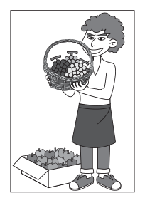
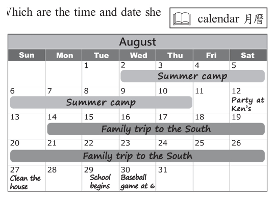

開卷有益 ／
國中教育會考 ／ 英語 ／ 112 年112 年國中教育會考英語試題與答案
這一頁是民國 112 年國中教育會考英語的整份歷屆試題，共 43 題，題目與標準答案出自心測中心 會考歷屆試題（依著作權法 §9，考試試題不受著作權保護），其中 43 題附有詳解。以下逐題列出題幹、選項與答案；要計時作答或記錄成績，請用線上練習。
線上作答這一科 →
全部 43 題
第 1 題
Look at the picture. The man is holding a of grapes in his hands.

（A） bag（B） basket（C） bowl（D） box答案：（B）
詳解與考點 正解：題幹要依圖片辨認裝葡萄的容器，關鍵外形是有提把、開口大且為編織狀。B 的 basket 意為「籃子」，與圖片中的容器相符，故 B 為正解。
A：bag 是袋子，通常材質柔軟、外形不固定，與圖中的編織籃不同。
C：bowl 是碗，通常較小且呈圓形，沒有籃子的提把。
D：box 是盒子，多為方正容器，與圖中外形不符。
本題考點：容器名詞——依物品的材質、形狀與構造辨識字彙；外形判準——有提把且編織、可盛裝物品者為 basket。
第 2 題
Dennis enjoys in public. He is proud of his beautiful voice.
（A） dancing（B） drawing（C） shopping（D） singing答案：（D）
詳解與考點 正解：題幹的 beautiful voice 指優美的嗓音，能以嗓音為傲的活動是 singing。D 的 singing 意為「唱歌」，故 D 為正解。
A：dancing 是「跳舞」，主要依靠動作，不能由 beautiful voice 推得，錯誤。
B：drawing 是「畫畫」，與嗓音無關，錯誤。
C：shopping 是「購物」，與嗓音無關，錯誤。
本題考點：語境詞彙——以句中的關鍵名詞連結最直接的活動；voice 指聲音，搭配 singing，而不是僅因 in public 聯想到表演。
第 3 題
Mrs. Johnson can’t hear very well. If you need to talk to her, you must .
（A） explain（B） hurry（C） listen（D） shout答案：（D）
詳解與考點 正解：Mrs. Johnson 聽力不好，若要和她交談，說話者必須提高音量。D 的 shout 意為「大聲喊」，故 D 為正解。
A：explain 是「解釋」，沒有表示提高音量，不能解決聽不清楚的問題，錯誤。
B：hurry 是「趕快」，與聽力無關，錯誤。
C：listen 是「聽」，此處 must 的主詞是 you；需要聽的人是 Mrs. Johnson，不是說話者，錯誤。
本題考點：語境詞彙——先辨認問題的對象與動作執行者；聽力不足時，說話者要 shout，不能把 listen 的動作主詞放錯。
第 4 題
People got very excited when they watched Ms. Smith at the party.
（A） danced（B） dancing（C） has danced（D） to dance答案：（B）
詳解與考點 正解：題幹的 watched 是感官動詞，後面接受詞 Ms. Smith 時，要以現在分詞表示看見動作正在進行。watch Ms. Smith dancing 表示「看見 Smith 女士正在跳舞」，dancing 是 dance 的現在分詞，故 B 為正解。
A：danced 是過去式，不能作為 watch 後的受詞補語，錯誤。
C：has danced 是現在完成式，不能接在 watch＋受詞後表示所看見的動作，錯誤。
D：to dance 不用於 watch＋受詞的結構；它看起來對，是因為中文可說「看她去跳舞」，但英文感官動詞後應用原形動詞或 V-ing，錯誤。
本題考點：感官動詞補語——watch、see、hear＋受詞＋原形動詞，表看見或聽見完整動作；＋V-ing，表動作正在進行；不可接 to V。
第 5 題
I tried on these shoes in several different , and I thought the white pair looked best on me.
（A） colors（B） prices（C） shapes（D） sizes答案：（A）
詳解與考點 正解：題幹說試穿幾種不同的東西後，白色那一雙最好看；white 直接指向顏色，因此應填 colors，表「顏色」，故 A 為正解。
B：prices 表「價格」，不能與 white 構成此處的選擇依據。
C：shapes 表「形狀」，白色不是形狀，語意不合。
D：sizes 表「尺寸」；它看起來對，是因為試鞋常會試尺寸，但後句以 white 說明選擇理由，關鍵是顏色。
本題考點：語境詞彙——用後句的關鍵字回推空格詞義；搭配判斷——different colors 可表示不同顏色，並與 white 呼應。
第 6 題
Rex did not feel the earthquake this morning. He in the park at the time.
（A） jogged（B） was jogging（C） has jogged（D） would jog答案：（B）
詳解與考點 正解：題幹的 this morning 與 at the time 表示地震發生的某一過去時點，空格要表達 Rex 當時正在慢跑的持續動作，應用過去進行式 was jogging。jog 是「慢跑」，was jogging 表示「當時正在慢跑」，故 B 為正解。
A：jogged 是過去簡單式，只陳述已完成的過去動作，未表達地震發生當下持續進行。它看起來對，是因為 this morning 也可搭配過去式，但 at the time 更明確要求進行中的動作。
C：has jogged 是現在完成式，連結過去與現在，不能搭配明確的過去時點 at the time。
D：would jog 表示過去的意願、習慣或條件結果，不能表示當時正在發生的動作。
本題考點：過去進行式——was/were+V-ing 表示過去某時正在進行的動作；時間判準——看到 at the time 等過去時點，若要描述當下持續動作，使用過去進行式。
第 7 題
Mr. Lee has worked in the same store for ten years; he’s never thought about his job.
（A） changing（B） finding（C） remembering（D） starting答案：（A）
詳解與考點 正解：Mr. Lee 在同一家店工作十年，題幹說他從未想過自己的工作，語意要表達「從未想過換工作」。think about changing his job 中 changing 表「更換」，change one’s job 是換工作，A 為正解。
B：finding his job 表找工作，與他已在同一店工作十年的情境不合。
C：remembering his job 表記得工作，語意不能表達是否繼續或轉換工作。
D：starting his job 表開始工作，與已工作十年的時間線不合。
本題考點：動詞語意——change a job 表換工作，須依前後語境選詞；完成式情境——has worked for ten years 表已持續工作十年，排除 finding、starting 等不合時間關係的詞。
第 8 題
I didn’t take the bus today because it was . All the seats were taken and a lot of students were standing.
（A） dirty（B） fast（C） full（D） wrong答案：（C）
詳解與考點 正解：所有座位都坐滿，還有許多學生站著，表示公車沒有空位。C 的 full 意為「滿的」，故 C 為正解。
A：dirty 是「骯髒的」，題幹未提到清潔狀況，錯誤。
B：fast 是「快速的」，車速與座位是否坐滿無關，錯誤。
D：wrong 是「錯誤的」，不能描述公車擁擠，錯誤。
本題考點：語境詞彙——座位全滿、有人站立是 full 的具體線索；作答須以描述的事實判斷，不能加入題幹沒有的負面評價。
第 9 題
Don’t go away when you’re cooking, the food might burn.
（A） but（B） if（C） or（D） so答案：（C）
詳解與考點 正解：題幹是命令句Don’t go away，後面接食物可能燒焦的警告結果，應用「命令句＋or＋後果」表示「否則」。or意為「否則」，故 C 為正解。
A：but表示轉折，前後不是相反或轉折關係，錯誤。
B：if雖可表假設，但此處須接警告結果；固定句型應用or，錯誤。它看起來對，是因為句子含有條件意味，但英文以命令句加or表達「否則」更符合語法與語意。
D：so表示結果，會把「食物燒焦」誤接成叫人別走開所造成的結果，因果方向不符，錯誤。
本題考點：連接詞——命令句＋or＋後果表示「否則」；語意判斷——先確認連接詞是轉折、條件、因果還是警告，再填入。
第 10 題
Jerry wanted to know he was kicked off the soccer team, but no one gave him a good reason.
（A） where（B） when（C） whether（D） why答案：（D）
詳解與考點 正解：no one gave him a good reason 表示 Jerry 想知道被踢出足球隊的原因。D 的 why 用來詢問原因，故 D 為正解。
A：where 問地點，與 reason 不對應，錯誤。
B：when 問時間，與 reason 不對應，錯誤。
C：whether 問是否，不能詢問原因；它雖常出現在間接問句中，但本句有 good reason 這個明確線索，錯誤。
本題考點：間接問句疑問詞——reason 對應 why，地點、時間、是否分別對應 where、when、whether；先由答案資訊判斷要問的內容。
第 11 題
Jenny is already forty, doesn’t have a job and often makes trouble for her parents. To them, she is really a(n) .
（A） daughter（B） example（C） gift（D） headache答案：（D）
詳解與考點 正解：題幹說 Jenny 已經四十歲、沒有工作且常為父母惹麻煩，觸發比喻性負面評價；a headache 意為「令人頭痛的人或事」，故 D 為正解。
A：daughter 意為「女兒」，只說身分，不能表達父母因她而困擾的評價。它看起來對，是因為 Jenny 確實是父母的女兒，但句意需要的是負面比喻。
B：example 意為「榜樣、例子」，與題幹的負面情況不合。
C：gift 意為「禮物、天賦」，帶正面語意，不合。
本題考點：語境詞彙——headache 可比喻令人困擾的人或事；冠詞 a(n) 後須選可作名詞且符合整句情緒評價的字。
第 12 題
Ed and Jill camping this weekend, so they have to finish their homework by Friday.
（A） went（B） were going（C） are going（D） have gone答案：（C）
詳解與考點 正解：this weekend 表示未來，Ed 和 Jill 的露營已是安排好的計畫，可用現在進行式表近未來。C 的 are going 與 camping 合成 are going camping，意為「要去露營」，故 C 為正解。
A：went 是過去式，與 this weekend 的未來時間不符，錯誤。
B：were going 是過去進行式，缺乏過去時間背景，錯誤。
D：have gone 是現在完成式，表示已經去了，與尚未到來的週末不符，錯誤。
本題考點：現在進行式表近未來——有 this weekend、tomorrow 等明確未來時間，且計畫已安排時，可用 be going+V-ing；時態須與時間線索一致。
第 13 題
Doraemon, a blue Japanese robot cat, has hated mice since his ears by a mouse.
（A） bit（B） bite（C） were bitten（D） have bitten答案：（C）
詳解與考點 正解：Doraemon 的 ears 是被 mouse 咬的承受者，應用被動語態；事件發生在過去，故用 were bitten。C 的 were bitten 意為「被咬」，故 C 為正解。
A：bit 是主動過去式，會變成 ears 咬了老鼠，主客關係顛倒，錯誤。
B：bite 是原形，且仍為主動語態，錯誤。
D：have bitten 是現在完成主動語態，主詞 ears 不能主動咬老鼠，錯誤。
本題考點：被動語態——主詞是動作承受者時用 be＋過去分詞；since 後可接過去事件，但仍須先判斷 ears 與 bite 是被動關係。
第 14 題
If we play some interesting games in class, there more fun in learning English.
（A） are（B） has（C） will be（D） will have答案：（C）
詳解與考點 正解：題幹由If we play...引導未來可能條件，if子句用現在式play，主句用未來式；there後須接be動詞，所以正確結構是there will be more fun，故 C 為正解。
A：are是現在式，不能和if子句所表的未來結果相配。
B：has不但不是未來式，there也不能搭配has。
D：will have雖有未來式，但there後應接be動詞，不能接have。
本題考點：英文條件句——表未來可能時，if子句用現在式，主句用will＋原形動詞；there be句型的未來式固定為there will be。
第 15 題
The of this shop was so bad; I never got any answer after I emailed them my questions.
（A） item（B） business（C） price（D） service答案：（D）
詳解與考點 正解：寄電子郵件詢問卻完全沒收到回覆，批評的是店家的服務品質。D 的 service 意為「服務」，故 D 為正解。
A：item 是「商品」，商品本身不能對電子郵件回覆，錯誤。
B：business 是「生意」，雖與商店有關，但題幹著重客服溝通，錯誤。
C：price 是「價格」，未回信不是價格問題，錯誤。
本題考點：語境詞義辨析——遇到商店情境，須以後文具體事件判斷名詞；未回覆顧客詢問對應 service，不可只因 business 與商店相關就選它。
第 16 題
It’s not easy to see those islands clearly from here on sunny days, and it’s even less to see them on cloudy days.
（A） difficult（B） lucky（C） possible（D） special答案：（C）
詳解與考點 正解：晴天時已不容易看清島嶼，陰天時情況更差，句型 even less ___ to see them 要表達「更不可能看見」。C 的 possible 與 less 搭配成 less possible，故 C 為正解。
A：difficult 意為「困難的」，less difficult 是「較不困難」，反而與陰天更難看的語意相反，錯誤。
B：lucky 是「幸運的」，不能恰當描述能否看見島嶼，錯誤。
D：special 是「特別的」，與能見度無關，錯誤。
本題考點：比較級語境——先判斷 less 後的詞變成何種方向；既然陰天更難看清，就要用 less possible 表「較不可能」，不可只看 difficult 的表面意思。
第 17 題
Do you remember the CD I was looking for for months? I found it in a small shop. Look, here it is!
（A） almost（B） even（C） finally（D） still答案：（C）
詳解與考點 正解：找了好幾個月的 CD 最後在小店找到，空格要表達歷經等待後終於達成。C 的 finally 意為「終於」，故 C 為正解。
A：almost 是「幾乎」，不能表示已經找到的結果，錯誤。
B：even 是「甚至」，不能單獨表達等待後的完成，錯誤。
D：still 是「仍然」，與 here it is 所示已找到的結果不合，錯誤。
本題考點：副詞語意——for months 加上 found it 是「等待已久而成功」的線索，應用 finally；副詞須同時符合時間歷程與事件結果。
第 18 題
Business at Jane’s shop has not been good these days. And the new supermarket across the street only makes things .
（A） easier（B） worse（C） more boring（D） more convenient答案：（B）
詳解與考點 正解：Jane 的店近來生意不好，對街新開的超市會吸走顧客，使她的處境更差。B 的 worse 與 make things 搭配成 make things worse，意為「讓情況更糟」，故 B 為正解。
A：easier 是「更容易」，與生意受競爭影響的負面結果相反，錯誤。
C：more boring 是「更無聊」，不能恰當描述商業競爭造成的困境，錯誤。
D：more convenient 是「更方便」，從顧客角度或許合理，但句子談的是 Jane 的生意，對她是負面影響，錯誤。
本題考點：比較級語境——make things worse 是固定的語意搭配；判斷利弊時要鎖定題幹的觀點人物，不能改以顧客角度作答。
第 19 題
Scott wasn’t sure if the young woman before him was pulled him out of a car on fire.
（A） who（B） the one（C） the one she（D） the one who答案：（D）
詳解與考點 正解：題幹在was後需要名詞補語the one，並以關係子句說明是哪一位女性；the one who pulled him out of a car on fire表示「那位把他從失火車中拉出來的人」，故 D 為正解。
A：who可引導關係子句，但was後缺少先行詞或名詞補語。
B：the one後面的pulled需要關係代名詞who連接，否則子句結構不完整。
C：the one後加she會使關係子句多出主詞，形成雙主詞錯誤。
本題考點：關係子句——be+the one who＋動詞可指「做某事的那個人」；who在子句中作主詞，因此後面直接接動詞，不可再加she。
第 20 題
I swimming for several years before I went to this high school. I gave it up because of heavy schoolwork.
（A） have practiced（B） am practicing（C） practiced（D） would practice答案：（C）
詳解與考點 正解：游泳發生在進入這所高中以前，且後句說因課業重而放棄，描述的是一段已結束的過去經驗。C 的 practiced 是過去簡單式，意為「曾練習游泳」，故 C 為正解。
A：have practiced 是現在完成式，通常連結現在；本句的 before I went 與 gave it up 都指向過去，錯誤。
B：am practicing 是現在進行式，表示正在練習，與已放棄不符，錯誤。
D：would practice 可表過去習慣，但本句重點是曾持續數年並已結束的經驗，沒有反覆習慣的語境，錯誤。
本題考點：過去簡單式——有 before I went to this high school 等明確過去時間點，且行為已因後續事件結束時，用 practiced；不要見到 for several years 就一律選完成式。
第 21 題
Frank Kane is so good in the movie that many people he will win the best actor prize.
（A） expect（B） forget（C） notice（D） plan答案：（A）
詳解與考點 正解：題幹說 Frank Kane 在電影中表現很好，many people 後接子句表示許多人「預期」他會得最佳男主角獎。expect 意為「預期、預料」，用法與語意都符合，故選 A。
B：forget 意為「忘記」，不能表達預料他會獲獎。
C：notice 意為「注意到」，後面子句不是此處要表達的預測。
D：plan 意為「計畫」，主詞 many people 並非在安排他獲獎。它看起來對，是因為頒獎似乎需要安排，但句子是在說觀眾的預期。
本題考點：動詞語意辨析——依前後語意判斷動詞；expect＋子句表預期某事發生，不能以字面相關的動作取代。
第 22 題
The new medicine that just came out on the market thousands of lives.
（A） and saved（B） has saved（C） saving（D） to save答案：（B）
詳解與考點 正解：主詞 The new medicine 後的 that just came out on the market 是關係子句，主要動詞須表達新藥上市至今已救了數千條命的成果，應用現在完成式 has saved，B 為正解。
A：and saved 多了連接詞 and，且前面沒有可與之對等連接的主要動詞，句構不完整，錯誤。
C：saving 是現在分詞，不能單獨作本句的主要動詞，錯誤。
D：to save 為不定詞，常表目的或未來動作，不能表達已累積救人的結果，錯誤。
本題考點：現在完成式——過去發生而結果延續或累積到現在時，用 have/has＋過去分詞；句構辨識——先找主詞與關係子句，再補上主要動詞。
第 23 題
Now I often think of those days with Pip, my pet dog. When I read in my room, he quietly beside me.
（A） will come and sit（B） comes and sits（C） has come and sat（D） used to come and sit答案：（D）
詳解與考點 正解：說話者現在回想與寵物狗 Pip 共度的日子，句中描述牠過去常常來身旁安靜坐著、如今不再發生的習慣。D 的 used to come and sit 意為「過去常常來坐在」，故 D 為正解。
A：will come and sit 是未來行為，與回憶舊日情境不符，錯誤。
B：comes and sits 是現在習慣，未表達 Pip 已屬往日時光，錯誤。
C：has come and sat 是現在完成式，著重一次或已完成的行為，不能表達過去反覆的習慣，錯誤。
本題考點：used to＋原形動詞——表示過去反覆發生、現在已不再發生的習慣；遇到 those days、often think of 等回憶線索時，區分現在習慣與過去習慣。
第 24 題
Amy went to Four Seasons’ Kitchen with her mother after she collected 15 stars. They ordered two Garden Sandwiches, an Autumn Wind, and a Winter Snow. After using the stars, how much did they pay for their meals?

（A） $290.（B） $230.（C） $220.（D） $160.答案：（B）
詳解與考點 正解：題幹要依菜單計算 2 份 Garden Sandwich、1 份 Autumn Wind、1 份 Winter Snow 的餐點金額，再扣除集滿 15 顆星可折抵的金額。依菜單原始數字逐項加總並扣除星點折扣後，實付 $230，故 B 為正解。
A：$290 是未正確套用 15 顆星折抵時容易得到的較高金額，錯誤。
C：$220 比正確結算少 $10，表示餐點價格或星點折抵金額的加減有誤，錯誤。
D：$160 與 2 份 Garden Sandwich 加上兩份其他餐點的結算不符，錯誤。
本題考點：閱讀計算——先逐項列出餐點數量與菜單價格、加總餐費，再依星點規則扣抵；金額題須同時核對品項數量與折扣條件，不能只做其中一步。
第 25 題
Amy wants to bring her friends to Four Seasons’ Kitchen in August. She looks at her calendar to pick a time to go there. Which are the time and date she can choose?
（A） 8:30 pm, August 1.（B） 5:00 pm, August 11.（C） 3:00 pm, August 13.（D） 2:00 pm, August 28.答案：（B）
詳解與考點 正解：題幹要求同時符合餐廳8月的營業日與營業時段，以及Amy日曆可安排的時間。交叉比對三項條件後，8月11日5:00 pm符合，故B為正解。
A：8月1日8:30 pm未同時符合題附餐廳資訊與Amy日曆的限制，錯誤。
C：8月13日3:00 pm未同時符合題附餐廳資訊與Amy日曆的限制，錯誤。
D：8月28日2:00 pm未同時符合題附餐廳資訊與Amy日曆的限制，錯誤。
本題考點：英語生活資訊閱讀——將日期、時間與行程分別列出後逐項交叉比對；條件篩選——選項必須同時滿足營業日、營業時段與個人可用時間，缺一不可。
第 26 題
According to the notes, which is the WRONG way to help a baby bird that is out of its nest?
（A） Feed it before you take it to a hospital.（B） Leave it alone if it is not hurt and has feathers.（C） Call the animal center if you can’t find its nest.（D） Put it back in its nest if it is not hurt and has few feathers.答案：（A）
詳解與考點 正解：題幹問依這份筆記，幫助離巢雛鳥「錯誤」的做法為何。筆記在「If the bird is HURT」一段明寫「Carefully pick the bird up and take it to an animal hospital.（Keep it warm and don't give it any food!）」——送醫前不可餵食，故 A「餵食後再送醫」與筆記相反，是錯誤做法，選 A。
B：筆記「If it has FEATHERS: Just leave it there!」指未受傷且已長羽毛就讓牠留在原地，與此選項一致，是正確做法。
C：筆記「If you CAN'T find or reach the nest → Call the animal center.」找不到巢就打給動物中心，是正確做法。
D：筆記「If it has FEW FEATHERS: You CAN reach the nest → Put the bird back.」羽毛稀少且構得到巢就放回巢中，是正確做法。
本題考點：圖表式短文的細節比對——先認出題目要找的是「與文本相反」者，再逐項回原文對應句核對；受傷／未受傷、羽毛多／少是筆記的分流條件，須依條件走到對應處置。
第 27 題
According to the notes, what do birds do if their babies have the smell of people on them?
（A） They keep taking care of them.（B） They push them out of the nest.（C） They clean them until the smell goes away.（D） They leave them behind and move to a new nest.答案：（A）
詳解與考點 正解：題幹問依這份筆記，雛鳥身上有人的氣味時親鳥會怎麼做。筆記右側方框先寫出常見迷思「People believe birds will give up their babies if they have the smell of people on them.」，下方箭頭接「WRONG! Birds don't care!」明白否定該迷思——親鳥並不在意人的氣味，仍會繼續照顧，故選 A。
B：筆記未提親鳥會把雛鳥推出巢外，此為憑空推測。
C：筆記說親鳥「don't care」，並非會清理氣味；清理之說文中全無依據。
D：拋棄雛鳥另築新巢正是被「WRONG!」否定的迷思內容，與筆記結論相反。
本題考點：迷思—更正結構的閱讀——文本先陳述「人們相信…」再以 WRONG 反駁時，正解取「反駁後的事實」而非被引述的迷思；看到 People believe/WRONG 這組訊號就要判斷哪一句才是作者主張。
第 28 題
According to the reading, which is one of the reasons for food waste?
（A） Stores do not know how to pack food well.（B） Farmers do not have enough machines to collect food.（C） There is no refrigerator on the truck to keep food fresh.（D） Factories do not have enough trucks to carry food to stores.答案：（C）
詳解與考點 正解：題幹問食物浪費的原因，文章指出運輸過程中卡車沒有冰箱保鮮，食物在送到商店前便可能腐壞。C 的 There is no refrigerator on the truck to keep food fresh 與原文原因相符，故 C 為正解。
A：文章沒有說商店不懂得妥善包裝食物是食物浪費的原因，錯誤。
B：文章沒有以農夫缺乏收集食物的機器作為原因，錯誤。
D：文章沒有說工廠缺乏運送食物到商店的卡車；重點是運輸卡車未能冷藏保鮮，錯誤。
本題考點：閱讀細節理解——原因題要回扣原文的因果敘述；運輸中沒有冷藏設備會使食物不新鮮，不能以常識替代文章明示的原因。
第 29 題
Which is true about food waste at each stage in the three parts of the world?
（A） For each area, the highest percentage of food waste happens at Stage 5.（B） Europe has a lower percentage of food waste at Stage 3 than the other two areas.（C） North America & Oceania has a higher percentage of food waste at Stage 1 than Europe.（D） South & Southeast Asia has a higher percentage of food waste at Stage 4 than the other two areas.答案：（D）
詳解與考點 正解：題幹要求比較三個地區在各 Stage 的食物浪費百分比，應逐一對照同一 Stage 的三個數值。表中 South & Southeast Asia 在 Stage 4 的百分比較另外兩地區高，故 D 為正解。
A：三個地區的最高百分比不都出現在 Stage 5，不能把其中一地的趨勢套用到每一地，錯誤。
B：Europe 在 Stage 3 的百分比並非低於另外兩地區，錯誤。
C：North America & Oceania 在 Stage 1 的百分比並非三地最高；它看起來對，是因為容易把不同 Stage 的高低混在一起比較，錯誤。
本題考點：圖表數據比較——先固定同一個 Stage，再橫向比較三個地區的百分比；題目問 highest、lower、higher 時，必須逐項核對表中的同列數值，不可只憑整體趨勢判斷。
Sometimes when the rain falls hard and fast on you, it might hurt a little. But what happens when it hits a mosquito? A 2012 study says when a raindrop falls on a mosquito, it’s like when a bus hits a person. Besides, the little insect is hit by a raindrop about once every 20 seconds. So why don’t we see many dead mosquitoes after it rains? A mosquito is as big as a raindrop, but it is much lighter — 0.002 g only. This saves its life in raindrop attacks. Because the mosquito is so light, when it is hit by a raindrop, it won’t experience a force that is strong enough to kill it. The study also found that when a mosquito is hit by a raindrop, the insect is pushed by the raindrop and falls together with it. But the mosquito doesn’t get wet easily because it is covered with hairs which keep off water. After dropping about 6 cm, it will roll off the raindrop and fly away. However, this trick isn’t always successful. If the mosquito flies too low when it is hit by the raindrop, it won’t have time to fly off. Then it will hit the ground and meet its death.
第 30 題
What is the trick that the mosquito uses in rain?
（A） It shakes its body fast enough to get water off.（B） It drops with the raindrop and then rolls off it.（C） It flies behind the raindrop and pushes it away.（D） It rides on the raindrop and lands on the ground.答案：（B）
詳解與考點 正解：題目問蚊子在雨中的求生技巧，文章明說蚊子被雨滴撞到後會隨雨滴一起下落，約落下 6 cm 後再滾離雨滴飛走。B 的 drops with the raindrop and then rolls off it 正是這個過程；drop with 表「隨著……下落」，roll off 表「從……滾離」，故 B 為正解。
A：文章沒有說蚊子快速抖動身體來甩掉水，錯誤。
C：文章沒有說蚊子飛到雨滴後方並把雨滴推開，錯誤。
D：蚊子若隨雨滴落到地面會死亡，並非牠的求生方法；它看起來對，是因為蚊子確實會隨雨滴下落，但牠會在碰地前滾離雨滴。
本題考點：英文閱讀細節理解——先定位題幹的 trick，再找文章直接說明該方法的動作；動作順序判讀——蚊子先隨雨滴下落，再滾離並飛走，不能省略後一步。
第 31 題
What keeps a mosquito safe in the rain?
（A） It is very light.（B） It has no body hairs.（C） It is as big as a raindrop.（D） It is strong enough to fight the force of a raindrop.答案：（A）
詳解與考點 正解：題幹問蚊子在雨中安全的原因，須定位文中說明雨滴衝擊為何不足致命的句子。A 的 very light 表「非常輕」；蚊子僅重 0.002 g，因身體很輕，遭雨滴擊中時承受的力量不足以致命，故 A 為正解。
B：原文說蚊子身上覆有細毛，細毛能防水；選項說沒有體毛，與原文相反。
C：蚊子和雨滴一樣大是文中的描述，但使牠保命的是重量很輕，不是體型相同。
D：原文正是說雨滴的力量不夠強，無法殺死輕量的蚊子；選項說牠強到能對抗雨滴力量，錯把原因歸於蚊子的強壯。
本題考點：閱讀細節理解——找出題目所問結果的直接因果句；因果判準——蚊子安全是因重量僅 0.002 g、受力不足致命，不可把伴隨描述「和雨滴一樣大」當作原因。
第 32 題
When would it be dangerous for a mosquito in the rain?
（A） When it flies too close to the ground.（B） When the rain falls too hard and too fast.（C） When it is hit by raindrops too many times.（D） When it drops for more than 6 cm in the rain.答案：（A）
詳解與考點 正解：題幹問何時會有危險，關鍵條件在文末「flies too low」。A 表「飛得太靠近地面」；蚊子若飛得太低，被雨滴擊中後沒有時間滾離雨滴，便會撞到地面死亡，故 A 為正解。
B：雨下得又急又大只用來引出雨滴衝擊，文中未說這是蚊子死亡的條件。
C：文中提到蚊子約每 20 秒會被雨滴擊中一次，並未說被擊中很多次就會死亡。
D：蚊子約落下 6 cm 後會滾離雨滴並飛走；危險是飛得太低而來不及離開，不是落下超過 6 cm。
本題考點：條件推論——題目問危險條件時，須定位原文的假設句；判準——若蚊子飛得太低，便沒有空間及時間離開雨滴而撞地。
You probably have heard Beethoven’s famous piano piece “For Elise,” but do you know who “Elise” was? One story is that Elise was Elisabeth Röckel. She once sang in Beethoven’s opera Fidelio, and the two became very good friends. Beethoven called her “Elise.” When Röckel was leaving the city of Vienna, Beethoven wrote “For Elise” to say goodbye to her. Another story is that Elise was Therese Malfatti. Beethoven was in love with her. He wrote a piece for her and put “For Therese” on the manuscript. Malfatti kept the manuscript and left it to her family when she died. Later, a man copied the manuscript and wrote “For Elise” by mistake. There is another possible Elise: Elise Barensfeld. She learned the piano from Malfatti, the same Malfatti in the second story. To help Malfatti, Beethoven wrote the piece for her to use to teach Barensfeld. These are just some guesses about who Elise was. We may never know the right answer. No one knew about the piece until 1867, when the manuscript was found. This was 40 years after Beethoven’s death, so he wasn’t around to tell us who Elise was. Only one thing is for sure: “For Elise” will always be enjoyed. manuscript 手稿
第 33 題
What do the three stories in the reading all talk about?
（A） Who Beethoven’s true love was.（B） Who played “For Elise” the best.（C） How “For Elise” became popular.（D） Why Beethoven wrote “For Elise.”答案：（D）
詳解與考點 正解：題幹要求整合三個故事的共同內容，須比較每則故事都在解釋的問題。D 的 why Beethoven wrote “For Elise” 表「貝多芬為何創作〈給愛麗絲〉」；三種說法分別連結告別朋友、愛慕 Malfatti，或協助 Malfatti 教學生，故 D 為正解。
A：貝多芬的真愛只涉及第二個故事，不能概括三則說法。
B：文章沒有比較誰把〈給愛麗絲〉彈得最好。
C：文章提到手稿 1867 年才被發現，但三個故事的焦點不是樂曲如何流行。
本題考點：主旨整合——先找各段共同回答的核心問題；判準——三則材料皆在推測「Elise」是誰，進而說明創作此曲的原因。
第 34 題
What do we know about “For Elise” from the reading?
（A） It first appeared in the opera Fidelio.（B） The true “Elise” was Elise Barensfeld.（C） The manuscript was found after Beethoven died.（D） The manuscript is now kept by the city of Vienna.答案：（C）
詳解與考點 正解：題幹問可由文章確知的事實，應選原文有明確證據、非推測的敘述。C 表「手稿在貝多芬去世後才被發現」；文中說手稿於 1867 年發現，這已是他去世 40 年後，故 C 為正解。
A：Fidelio 是 Röckel 演唱的歌劇，文章未說〈給愛麗絲〉最早在該歌劇出現。
B：Elise Barensfeld 只是可能人選之一，文章明說真正身分可能永遠無法確定。
D：文章只提到 Röckel 離開維也納，未說手稿現由維也納市保存。
本題考點：細節辨析——區分原文確定事實與故事中的猜測；判準——含明確年代與事件的「1867 年、去世 40 年後發現手稿」可直接作答。
第 35 題
What can we learn about the three women from the stories?
（A） They were called “Elise” by their friends.（B） Elisabeth Röckel was a close friend of Beethoven’s.（C） Therese Malfatti changed “For Elise” to “For Therese.”（D） Elise Barensfeld was Beethoven’s student.答案：（B）
詳解與考點 正解：題幹問三位女性的相關事實，須逐一對照人物關係。B 表「Elisabeth Röckel 是貝多芬的親近朋友」；文中明說兩人成為非常好的朋友，故 B 為正解。
A：只有 Röckel 被貝多芬稱作 Elise；其餘兩人只是可能的 Elise，不能說三人都被朋友如此稱呼。
C：手稿原先寫的是 “For Therese”，後來是抄寫者誤寫成 “For Elise”，不是 Malfatti 更改名稱。
D：Barensfeld 是 Malfatti 的鋼琴學生，不是貝多芬的學生。
本題考點：人物細節比對——把每位人物與其關係、行動逐一配對；判準——Röckel 是好友、Malfatti 保存手稿、Barensfeld 師從 Malfatti。
Which would you give a boy for his birthday, a toy truck or a doll? If you choose the truck, well, you’re not alone. Most people think that some toys are for boys and some are for girls. We might pick building toys for boys and kitchen toys for girls. But why do we do this? Are boys and girls really born with different interests in toys? No, they are not. Children start to show different interests in toys at age three, but only because at this time, they begin to learn about gender and to follow what others of their gender do. If you give a girl kitchen toys, she will think they are girls’ toys because she sees other girls playing with them. But if you give a girl a toy car and show her a group of girls who are playing with cars, she’ll play with the toy car and think it is a girls’ toy. This “watch and follow” habit often becomes a rule for both boys and girls in choosing the “right” toys. However, this rule can be bad for children. Different toys teach children different things. Dolls help with their early language use, and building toys are good for learning math and science. By playing with different toys, children can find out what they are interested in or what they are good at. If they only play one kind of toy, they may lose this important chance. They may also get a wrong idea about what boys or girls are able to do. Some doctors worry that children may use the same kind of thinking when they look for jobs in the future. If they do, they may miss something more important than just getting a chance to play with different toys. They may miss many, perhaps better, chances in life.
第 36 題
What idea does Jesse Cohen talk about in the reading?
（A） Not all kinds of toys are helpful for children’s learning.（B） Parents should give their children the right toys for their age.（C） Children should learn about their gender from playing with toys.（D） We should not let gender decide which toys children can play with.答案：（D）
詳解與考點 正解：題幹問作者主張，關鍵在文章反對依性別替孩子限定玩具。D 的 gender decide which toys children can play with 表「不應讓性別決定孩子能玩哪些玩具」；文章說不同玩具帶來不同學習與探索機會，故 D 為正解。
A：文章說不同玩具都能教孩子不同事情，並非有些種類沒有幫助。
B：文章批評把玩具分成男孩或女孩的「正確」選擇，未主張父母應依年齡給對的玩具。
C：文章說孩子會從周遭學習性別分類，但作者反對讓這種分類主導玩具選擇。它看起來對，是因為文中確實提到孩子學習性別；但那是現象描述，不是主張。
本題考點：主旨推論——分辨作者描述的社會現象與其評價；判準——當性別刻板分類限制玩具，孩子會少掉學習、發現興趣與能力的機會。
第 37 題
In the third paragraph, why does Jesse Cohen think “this rule can be bad for children”?
（A） Children may not want to share their toys with others.（B） Children may have the wrong idea about following rules.（C） Children may not be able to learn from playing with toys.（D） Children may miss the chance to find out what they really like.答案：（D）
詳解與考點 正解：題幹指定第三段的 this rule，應回扣「只玩一種玩具」造成的後果。D 表「孩子可能錯失發現自己真正喜好的機會」；文中明說若只玩一類玩具，孩子可能失去發現興趣或專長的重要機會，故 D 為正解。
A：段落沒有談孩子是否願意和別人分享玩具。
B：文章批評的是性別規則限制選擇，並非孩子對「遵守規則」產生錯誤觀念。
C：不同玩具仍能讓孩子學習；問題是只接觸單一類型會少掉其他學習與探索機會，不是完全無法從玩具學習。
本題考點：段落論點理解——代名詞 this rule 須回指前文的性別化玩具選擇規則；判準——「錯失機會」不等於「完全學不到」，要保留原文語義強度。
第 38 題
In the reading, after Jesse Cohen talks about an idea, he often gives an example to make it clear. Below are four of the sentences in the third paragraph. Which is used as an example?
（A） “However, this rule can be bad for children.”（B） “Dolls help with their early language use, and building toys are good for learning math and science.”（C） “Some doctors worry that children may use the same kind of thinking when they look for jobs in the future.”（D） “If they do, they may miss something more important than just getting a chance to play with different toys.”答案：（B）
詳解與考點 正解：題目問第三段中哪一句是用來舉例，應找具體事例來支持前面的概念。B 說 Dolls help with early language use，building toys are good for learning math and science，以「娃娃」與「積木」兩種具體玩具，說明不同玩具教孩子不同事物，故 B 為正解。
A：However, this rule can be bad for children 是提出論點，沒有列出具體事例，錯誤。
C：Some doctors 是具體來源，when they look for jobs in the future 也是具體情境，容易被誤認為例證；但整句內容仍是在預測未來可能發生的後果，不是用具體事物說明前述概念，錯誤。
D：If they do，該句是在說明可能失去更重要機會的假設後果，不是例證，錯誤。
本題考點：句子功能辨析——例證句會列出具體人、事、物或情況來支持抽象論點；B 以 dolls 與 building toys 例示玩具的不同作用，C、D 則推論可能後果。
Marie Colvin was a world-famous war reporter. She was born in New York, USA, in 1956 and died in Homs, Syria, in 2012. When she was a student at Yale University, Colvin decided that she wanted to be a reporter in the future. She joined the Sunday Times, a UK newspaper, in 1985 and soon became its Middle East reporter. Besides the Middle East, she also reported from other parts of the world: Chechnya, Kosovo and Sri Lanka, for example. When she was reporting on the war in Sri Lanka, she lost her left eye. But that never stopped her. She still went to dangerous places that few reporters wanted to visit and stayed when others left. Colvin showed great empathy in her stories. For her, war reporting was not just some quick interviews and a few photos. She wrote about real people and their real lives. Her writing made you feel so strongly about these people’s stories, just like they were your own. She hoped that through her work the world would understand what really happened in war, and would take action to stop the fighting. On February 22, 2012, the day after she gave her report on the war in Homs, Colvin was killed when the house she was staying in was attacked. She always knew what price a war reporter might have to pay. She already lost an eye before. This time, she gave her life to the work she could not give up — telling the true stories to the world.
第 39 題
What is the reading mostly about?
（A） Marie Colvin’s war reports.（B） Marie Colvin’s working life.（C） Marie Colvin’s schooldays at Yale.（D） Marie Colvin’s experiences in Homs.答案：（B）
詳解與考點 正解：題幹問全文主要內容，須選能涵蓋人物生涯各階段的選項。B 的 working life 表「工作生涯」；文章從 Colvin 在 Yale 立志、加入 Sunday Times、各地戰地報導，到在 Homs 犧牲，完整描述其記者生涯，故 B 為正解。
A：戰地報導是其工作的重要部分，但選項未涵蓋求學立志與整個職業歷程。
C：Yale 求學只是文章開頭的一小段。
D：Homs 經驗只限生命最後階段，無法概括全文。
本題考點：主旨判斷——以能覆蓋全文主要段落的選項為準；判準——人物傳記同時寫求學、任職、工作特質與死亡時，主旨通常是其生涯而非單一事件。
第 40 題
What does it mean when someone has empathy?
（A） They are good at taking war photos.（B） They like to read other people’s life stories.（C） They are able to understand how other people feel.（D） They are good at helping people change their own lives.答案：（C）
詳解與考點 正解：題幹問 empathy 的意思，文章說 Colvin 的文字使讀者強烈感受戰爭中人們的故事，彷彿是自己的經歷；empathy 指「理解他人感受的能力」，故 C 為正解。
A：taking war photos 是拍攝戰地照片的能力，不是 empathy 的詞義。
B：喜歡閱讀他人的人生故事不等於能理解他人的感受。
D：幫助別人改變自己的人生並非文章對 empathy 的描述。
本題考點：英文詞義推測——empathy 表示同理心、理解他人感受的能力；應從後文使讀者如同親身感受他人故事的描述判斷詞義。
第 41 題
Which is true about Marie Colvin?
（A） The chance to study at Yale made her leave her job in the Middle East.（B） The experience in Sri Lanka did not change her way of reporting news.（C） She was killed in Homs when she was interviewing soldiers there for her report.（D） She was not sure what to do in the future until she worked for the Sunday Times.答案：（B）
詳解與考點 正解：題幹問 Marie Colvin 的正確敘述，文章說她在斯里蘭卡報導戰爭時失去左眼，但「that never stopped her」，仍前往危險地區報導。故斯里蘭卡的經驗沒有改變她持續報導的做法，B 為正解。
A：她在耶魯大學求學時就決定未來要當記者，後來才加入 Sunday Times，非因耶魯而離開中東工作，錯誤。
C：她是在 Homs 住處遭攻擊而死亡，不是採訪士兵時遇害，錯誤。
D：她在耶魯求學時已決定志向，不是加入 Sunday Times 後才確定，錯誤。
本題考點：英語閱讀細節辨析——依人物經歷的時間順序核對選項；轉折訊息判讀——but 與 never stopped her 表示失去左眼後仍持續從事危險地區報導。
Speaking American is a great book! Lucia Leisure ★★★★★ I just love Josh Katz’s new book! It’s about 42 in different parts of the US. The information in the book was collected from the quiz that Katz built on the website in 2013. The quiz asked what words people use for something, and their answers showed interesting facts. For example, there are different names for sports shoes. In most parts of the US, people say “tennis shoes.” In the northeast of the country, people wear “sneakers.” In some towns, “tennis shoes” and “sneakers” become “gym shoes.” The use of words tells us where people are from, like Katz’s book says. But in my experience, it also shows 43 . My family has lived in New York since my grandparents. It’s not surprising that I say “sneakers.” But my grandfather says “plimsolls,” and my daughter says “kicks” or “vans.” Maybe Katz can study this difference for his next book.
第 42 題
（A） what things are called（B） how sports are played（C） why different languages are spoken（D） what words are often spelled differently答案：（A）
詳解與考點 正解：空格位於文章主題句，後文舉tennis shoes、sneakers、gym shoes等例子，說明美國不同地區對同一事物有不同名稱。因此填A「what things are called」，意為「事物如何被稱呼」，最符合文意。
B：how sports are played意為「運動如何進行」，文章只談運動鞋名稱，未談運動玩法，錯誤。
C：why different languages are spoken意為「為何使用不同語言」，文中比較的是同為英語的不同用詞，不是不同語言，錯誤。
D：what words are often spelled differently意為「哪些詞常有不同拼字」，文章談詞彙名稱不同，未談拼字差異，錯誤。
本題考點：篇章主旨與空格填入——先用後文例子概括主題；詞義對照——called表示「被稱作」，須與各地對同物不同名稱的語境相符。
第 43 題
（A） how old they are（B） who they speak to（C） where they grew up（D） whether they are men or women答案：（A）
詳解與考點 正解：空格後以祖父、作者與女兒三代在同住紐約卻使用 plimsolls、sneakers、kicks 或 vans 為例，關鍵是世代不同。A 的 how old they are 表「年齡多大」；三代人的用詞差異顯示年齡或世代也會影響用字，故 A 為正解。
B：例子沒有比較他們對誰說話。
C：三代人都住在紐約，不能用成長地點解釋這組差異；文章前段已用地區說明另一種用字差異。
D：例子比較的是祖父、作者與女兒的年齡世代，不是男女差異。
本題考點：推論填空——用例子中的共同改變因素推回空格概念；判準——地點相同而世代不同時，用詞差異可推論與年齡有關。
其他年度
回到國中教育會考英語的年度總覽 ，
或到國中教育會考題庫首頁 看其他科目。
題目與標準答案出自心測中心 會考歷屆試題（依著作權法 §9，考試試題不受著作權保護）。依中華民國《著作權法》第 9 條第 1 項第 5 款，
依法令舉行之各類考試試題不得為著作權之標的，得自由利用。詳解為 AI 整理的學習輔助，
並非官方標準答案 ；中華民國會修訂，引用前請對照現行版本查證。